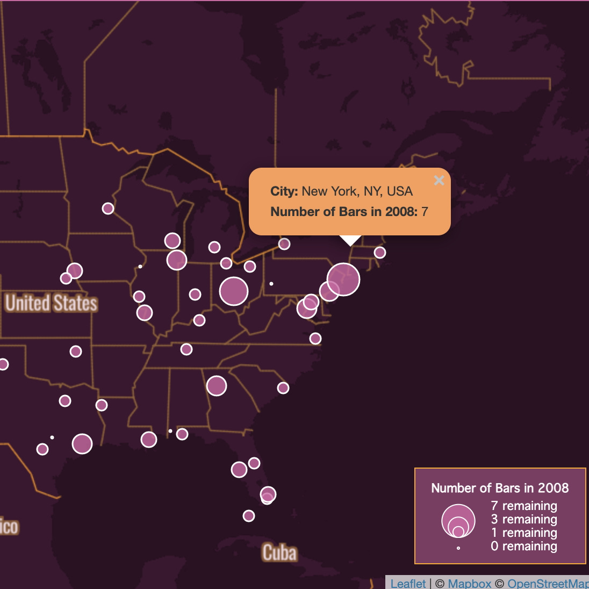
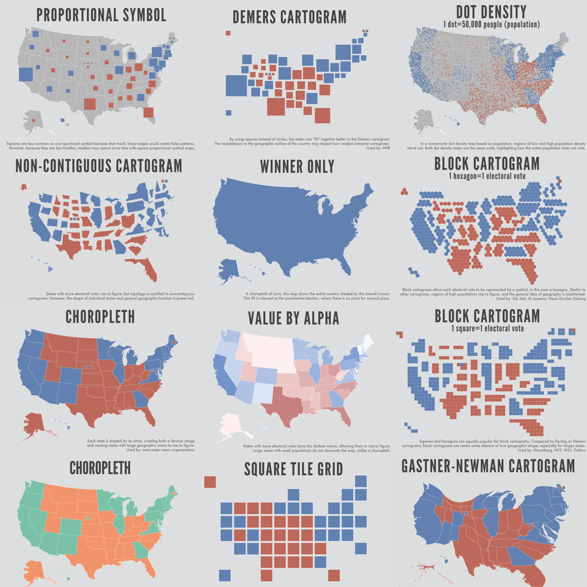
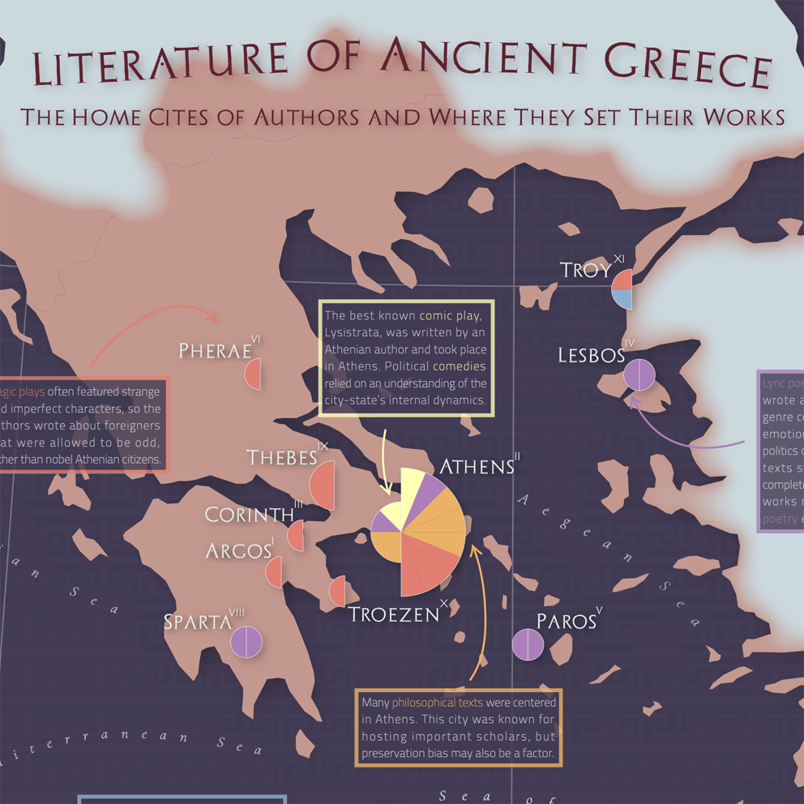
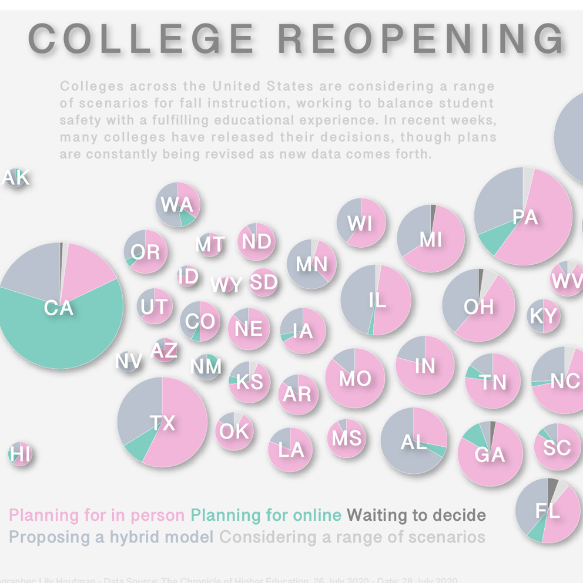
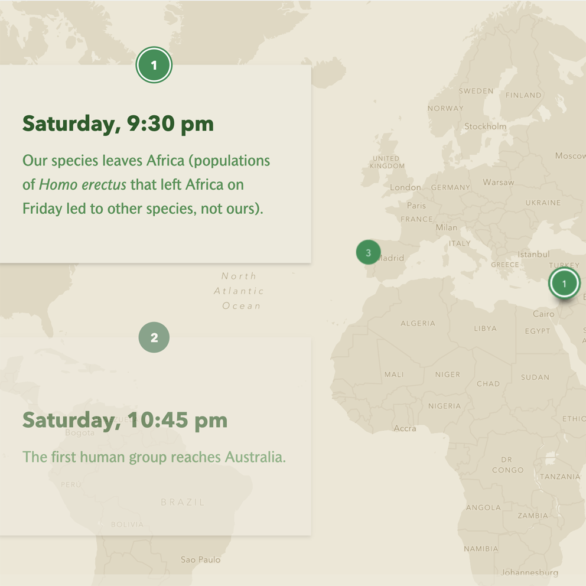
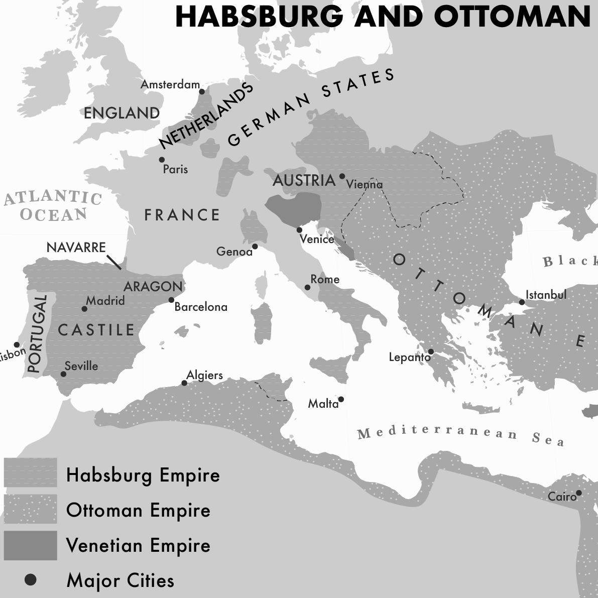
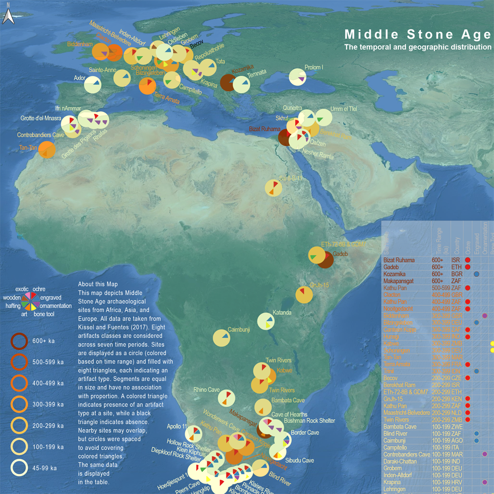
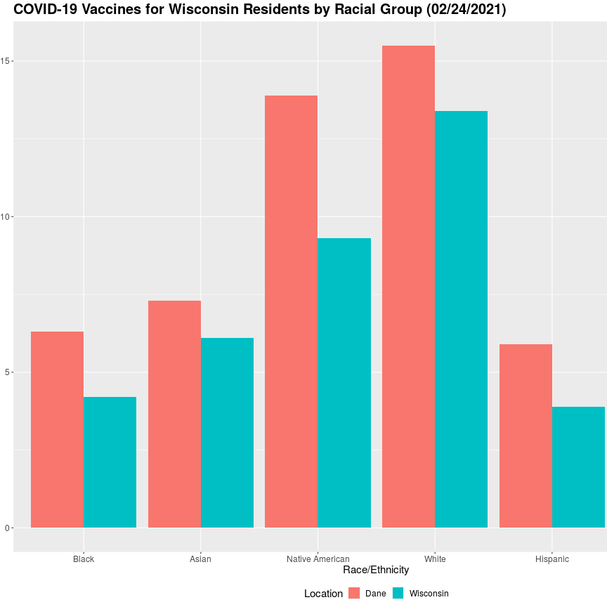

Toggle navigation
Menu
Lily Houtman
Maps
Graphics
About
Resume
Lily Houtman. Cartography. Data Viz.
I make maps to explain the world.
Maps

The Decline of Lesbian Bars in the United States

The 2020 Election: How Do You See It?

Location of Greek Literature
2020 Election: Shifts in Wisconsin

College Reopening Plans July 2020

Human Evolution in a Calendar Week
Greek Pottery Tileset

To Govern the Globe Textbook
COVID-19 and Wisconsin's 2020 Primary

Middle Stone Age Archaeological Sites
Graphics
Biden and the Future of the Democrats
Walls of Wisconsin: Eau Claire
Masks are a Statement
Just Another Dam Engineer!
Walls of Wisconsin: Green Bay

State, County Level Data Shows Racial Disparities in Vaccinations